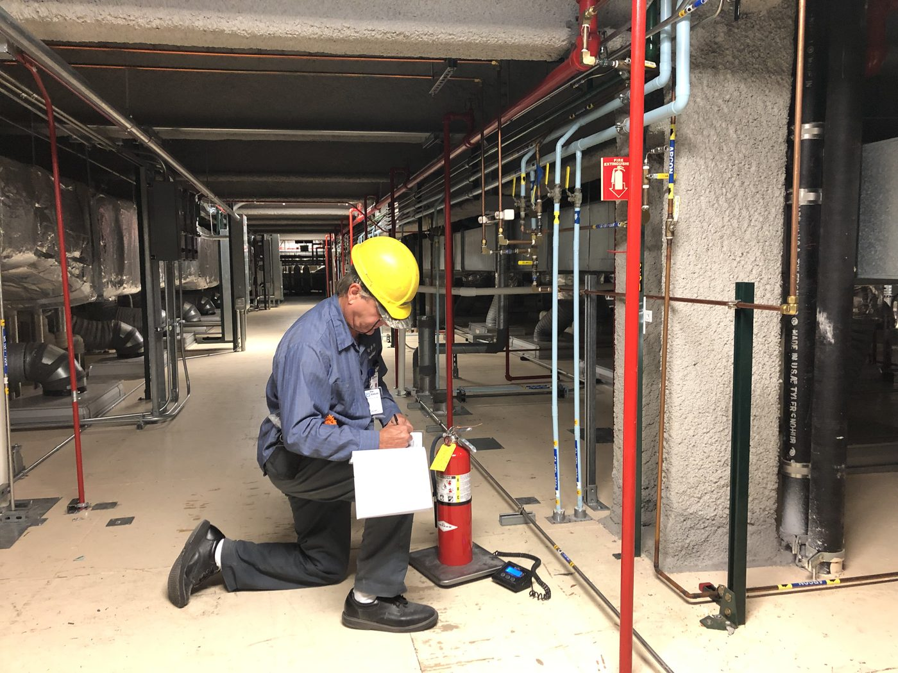
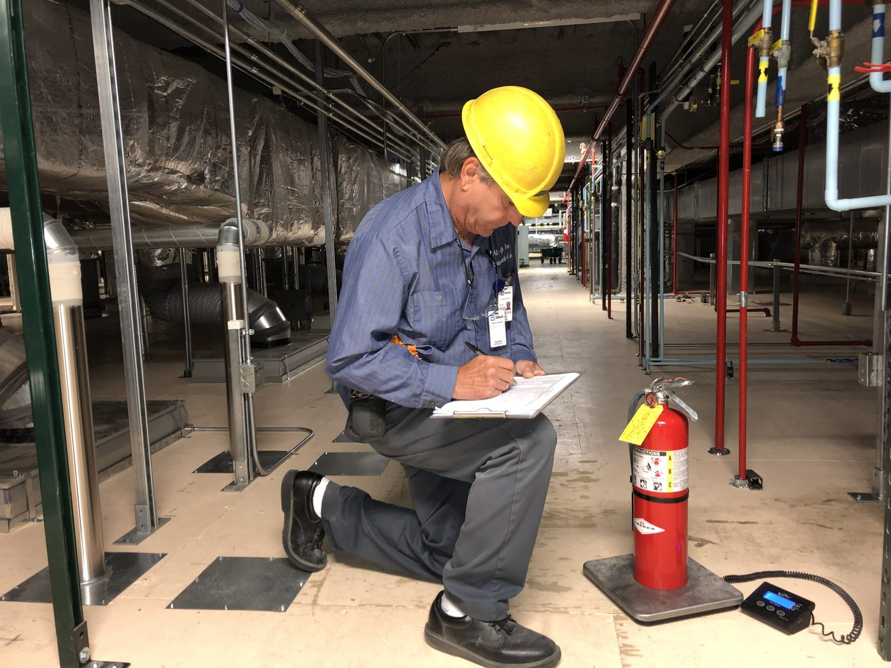

45 Years. One Specialty. Zero Shortcuts.
All Safe Fire Extinguisher Co., Inc. has been a portable fire extinguisher service and inspection specialist in Temecula, California since June 1, 1981. That is the entire story.
Why Portable Extinguisher Specialists?
Most fire protection companies do multiple things: alarms, sprinklers, suppression systems, extinguishers. When extinguishers are one item on a long service list, the technician doing the work is a generalist — he knows a little about a lot.
Our technicians know portable fire extinguishers completely. They know the pressure tolerances, the 6-year maintenance requirements, the hydrostatic intervals, the correct agent for each hazard class, and the installation requirements for apartment stairwells, industrial facilities, and everything in between. When something is wrong with a unit, they recognize it. When a building's extinguisher mix doesn't match its actual hazards, they flag it.
Forty-five years of doing one thing produces expertise that a generalist cannot match.
The Tortomasi Family
All Safe is a family-owned business. Tom Tortomasi Sr. founded the company in 1981 and continues to lead it today as CEO. Tom Sr. built the business on a handshake reputation — the same clients who hired him in 1981 are still clients today. Tom Tortomasi Jr. serves as CFO. Anne Tortomasi serves as Director.
There is no private equity. No roll-up. No absentee ownership. When you call All Safe, you're dealing with a company that has a direct, personal stake in its reputation. That matters in a trade where corner-cutting is common.

Field inspection in a high-density residential property — specialists, not generalists.

Our Standard — and the Industry Problem
Every service All Safe performs is the service we say we are performing. If a 6-year maintenance is due, we do it. If a hydrostatic test is required, we schedule it. If a unit fails inspection, we replace it. We hold written documentation for clients who need it. We use US-manufactured equipment from Amerex, Ansul, Badger, Strike First, and Buckeye.
The contrast with much of our industry is real: corner-cutting is common. The most frequent form is a technician who visually glances at each extinguisher, hangs a new annual tag, and leaves — no pressure check, no 6-year maintenance if due, no hydrostatic test if the cylinder is past its interval. The property gets a certificate. The extinguishers have new tags. But they haven't been serviced and may not function when needed. All Safe doesn't operate that way.
Our Commitment
We hold Type B, C, D, and F licenses from the California Office of the State Fire Marshal — all four license types for portable fire extinguisher contractors in California. Our technicians are licensed and trained specifically on portable extinguisher service, not cross-trained from other fire protection trades. We carry US-manufactured equipment and source all parts from authorized US distributors.
Founded June 1, 1981
Type B, C, D & F
Across Southern California
Ventura to San Diego
Work With Us
Contact us by email or phone and we'll follow up to learn about your property or facility.
Mon – Fri, 7:00 AM – 5:00 PM